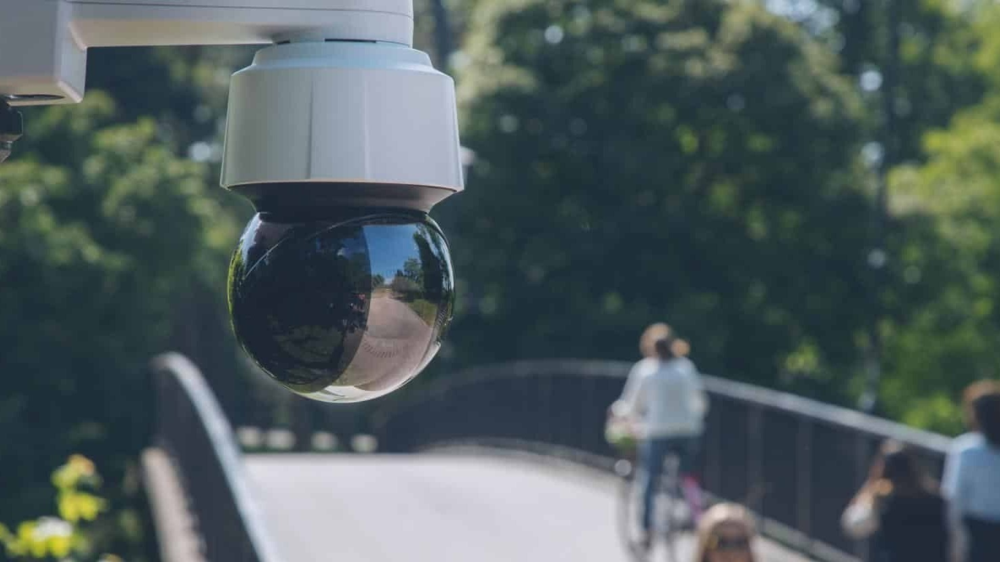

At the UK Safety Camera Network (USCN), we believe that public safety shouldn't require trading away your right to privacy. To achieve this, we do not use cheap, unsecure cloud cameras. Instead, we deploy commercial-grade hardware designed to keep data locked down and communities safe.
We choose our hardware based on three strict criteria: physical durability, data encryption, and local control.
To meet our strict security standards, we deploy high-end, vandal-proof enterprise cameras. You might notice these cameras come manufactured with built-in "AI" or analytical capabilities.
All automated tracking and facial tracking detection are completely disabled.
We do not use the AI. We buy these enterprise units exclusively for the features that protect you:
Vandal-Resistant Armoring: Rated to withstand heavy physical impacts, ensuring the camera is less likely be smashed, or for an attempt to tampered with with the camera, or knock it out of its approved viewing alignment to be successful.
On-Device Hardware Encryption: All recorded footage is stored locally on an encrypted, physical SD card inside the camera. If someone physically steals the camera, the data is harder for them to access.
Zero Cloud Dependence: Your video never floats around on a third-party corporate cloud server. It stays local, encrypted, and under strict decentralized control.
NOTE: Due to Data Protection concerns related to the release of personal data we are reviewing this function, more info will be available at transparency.uscn.org.uk currently live public viewing is disabled until further notice.
Every camera on our network features a public Transparency Page so the community can audit its alignment and ensure privacy masks are active. However, providing a high-quality, real-time public video stream creates a major privacy risk: it could be abused for stalking or tracking individuals.
To solve this, we split the camera's video output into two entirely separate streams:
The Main Stream (Internal Vault): Captures high-resolution, full-framerate video. This is encrypted and locked away on the local device, accessed only where legally required to by law (for example but not limited to Data Subject Access Request / lawful request by police).
The Sub-stream (Public Audit): If approved following our data-protection review, this stream would feed our public transparency website at a reduced resolution and restricted frame rate.
The result is a low-quality, choppy slideshow for public viewing. It is perfectly clear enough to prove the camera is online and properly masked, but entirely useless for tracking, following, or identifying specific people in a crowd.
By investing in high-quality hardware now, we are prepping the network for long-term community utility. The units we deploy feature physical alarm inputs. In the future phases of USCN, this will allow us to connect physical, vandal-proof "I Feel Unsafe" panic buttons directly to the camera posts, allowing members of the public to instantly flag a timestamp for secure storage without needing a smartphone, tracking apps, or centralized servers.